Learning Objectives
After completing this lesson, you'll be able to:
- Describe how FME's AI connectors connect workspaces to AI models.
- Write prompts that pass FME attribute values to an AI model.
- Use structured output and a JSON schema to return predictable AI responses.
- Use an AI connector to analyze a List Tools response and select an MCP tool for a user request.
In this lesson, you will:
- Optional: Watch a demonstration video (if you have not attended the live training).
- Scroll down to read the activity instructions below and follow the steps in your lab.
- Complete the quiz at the end of this lesson.
- Click 'Next' to mark the lesson complete.
Resources
- FME and MCP Strigo training lab with Weather MCP server
- If you're taking a live, online training course, you will have access to the lab within the live event. Please do not request an on-demand lab unless you are working on the course materials outside of the live, online course time.
- If you're taking the course on-demand, please request an MCP and FME on-demand lab to work through the exercises.
- Starting workspace | C:\FMEData\Workspaces\MCPandFME\FMEAsAnMCPClient-complete.fmw
- Complete workspace | C:\FMEData\Workspaces\MCPandFME\UseAIToSelectMCPTools-complete.fmw
AI Connectors in FME
FME connects workspaces to AI models through AI connector transformers. Each connector sends a request to an AI service and adds the model's response to the feature as attributes, so you can use AI in the middle of a workspace like any other transformer. The OpenAIConnector, used in this course, connects to OpenAI and to OpenAI-compatible services, such as Azure OpenAI and locally hosted models like Ollama. Connectors for other AI providers are available on FME Hub, and they follow the same pattern.
The AI connector transformers share a common pattern of parameters you must configure to use them:
- Account: A web connection stores the service endpoint and credentials, such as an API key, so they aren't saved in the workspace.
- Action: The type of request to send.
- The OpenAIConnector offers Create Response, Create Image, Edit Image, and Create Embedding.
- Model: The AI model that answers the request. Different models trade off cost, speed, and reasoning ability.
- Input-driven requests: When features enter the connector, it sends one request per feature and adds the response to that feature. This is why the data an AI model needs to compare, such as a full list of MCP tools, must arrive on a single feature.
Prompts
The Create Response action takes two kinds of prompts:
- System Instructions set the model's role, rules, and constraints. They apply to every request, for example, "You are selecting an MCP tool. Only select tools from the provided list."
- User Prompt is the specific request to answer. It can reference attribute values with
@Value(), so each feature sends its own data to the model.
Effective prompts for workflow automation are explicit. State the task, give the model all the data it needs, list the rules it must follow (including what it must not do, such as inventing tool names), and describe the exact output you expect. Clear rules make the model's answers more consistent from run to run. In the exercise, the rules and the data are both in the User Prompt so you can see the whole request in one place.
Structured Output
By default, a model answers in free text, which may be difficult to integrate into your workspace consistently. When you enable Structured Output and provide a JSON Schema, the OpenAIConnector requires the response to match that schema exactly. The response always contains the properties and types you define as JSON, so downstream transformers can rely on it.
The Create Response action adds these attributes to each feature:
- _output_text holds the model's answer. With structured output, this is JSON text that matches your schema, ready to parse with a JSONFlattener, JSONExtractor, or JSONFragmenter.
- _json_response holds the full API response, including the model used and token counts. It's added only when Include Response JSON in the Advanced section is set to Yes.
- _response_id, _model, _status, _input_tokens, and _output_tokens describe the request, which helps with troubleshooting and tracking cost.
Advanced options, such as Temperature, control how varied the model's answers are. Lower values give more predictable responses.
Use AI to Select an MCP Tool
MCP tool definitions intentionally give AI models readable, consistent information. Each tool has a name, natural language description, and a structured input schema, all of which an AI needs to understand what a tool does and how to use it. Instead of hardcoding which tool to call, your workspace can let an AI model decide at runtime using user input data and a list of available MCP tools.
An MCPCaller uses List Tools to retrieve the full set of tools available on an MCP server. An AI connector takes the tool list and the user's request as input, evaluates them to select the most appropriate tool, then outputs the selected tool name and the structured input for that tool, using structured output so the result is always in the same shape. In the next lesson, you will pass this output to a second MCPCaller that calls the selected tool.
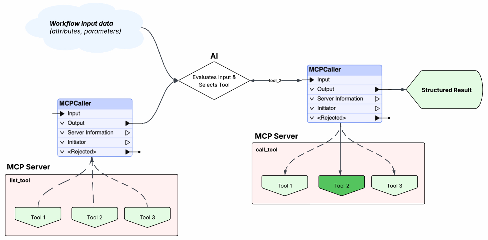
Exercise

This exercise continues where the FME as an MCP Client exercise left off. You should complete the previous exercise before continuing with this one.
Frank, a GIS Administrator, has already used FME's MCPCaller in the FME as an MCP Client exercise to connect to a weather MCP server, list its available tools, and call a tool. Instead of hardcoding a tool into an MCPCaller for every kind of request, he wants an AI model to read the server's tool list and choose the right tool for a user's request. The AI must also format the input that the selected tool expects.
In this exercise, you will:
- Create a user parameter that captures a user's request to the weather MCP server.
- Prepare the MCP tool list and the user's request as attributes for an AI connector.
- Configure an OpenAIConnector with a prompt and structured output to select an MCP tool and format its input.
- Parse the AI response into tool name and tool input attributes, and inspect the tool the AI selected.
1) Open Starting Workspace
- Continue with your workspace in FME Workbench 2026.2 or newer.
- It already contains the two MCPCallers you built in the previous lesson: one to List Tools, and one to Call Tool.
- If you do not have your workspace from the previous exercise, you can open the starting workspace (C:\FMEData\Workspaces\MCPandFME\FMEAsAnMCPClient-complete.fmw).
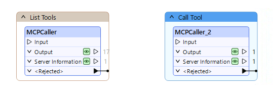
2) Create User Parameter
The easiest method to take user input to control how the workspace runs is with user parameters.
- In the Navigator, right-click User Parameters and select Manage User Parameters.
- Click the green + icon to add a new Text parameter.
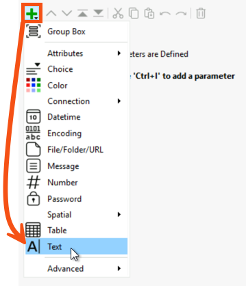
- Set the Parameter Identifier to USER_REQUEST and the Label to Prompt to Weather MCP Server.
- Use the Layout drop-down to select Single-Row Input with Popup Editor.
- Optionally, provide a default value like:
Get the current weather forecast for Vancouver
- Click OK to close the window.
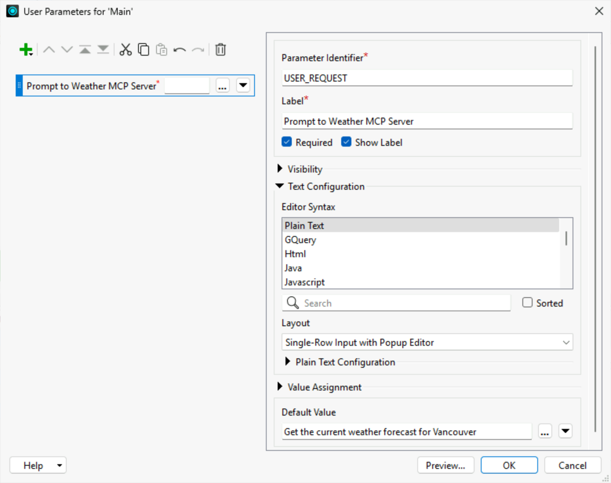
3) Edit the List Tools MCPCaller
For the dynamic tool selection workflow, you want the List Tools MCPCaller to return only one record with information about all the tools. With individual records for each tool, a downstream AI connector can only analyze one tool at a time.
- Open the List Tools MCPCaller parameters.
- Expand the Advanced section, set the Output Grouping to Single Feature with List, and the Include Response JSON to Yes.
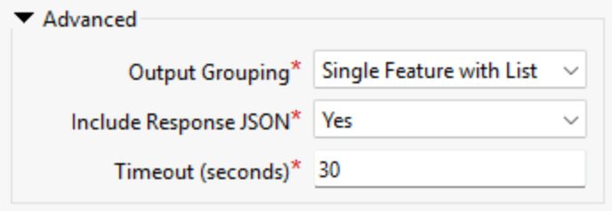
- Click OK.
- The transformer's caches will become stale and change color from green to yellow.
4) Add an AttributeCreator
- Add an AttributeCreator and connect it to the List Tools MCPCaller Output port.
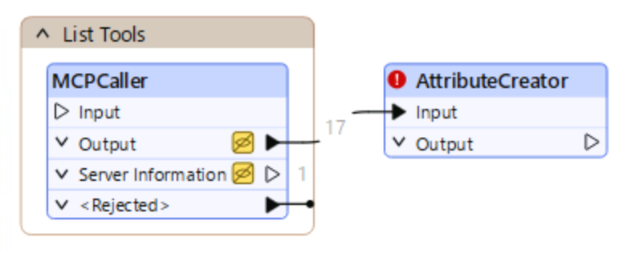
- Open its parameters and configure attributes for the user's request, today's date, and the list of tools returned by the MCP server.
- In the first row's Output Attribute column, enter user_request. For Value, use the drop-down options to select User Parameter, then choose USER_REQUEST.
- For the second row, name the Output Attribute today. For Value, use the Text Editor from the drop-down options to enter
@DateTimeFormat(@CurrentDateTime(),%Y-%m-%d).
- In the third row, name the attribute all_mcp_tools, and link the Value to the _json_response attribute, found under Attributes in the drop-down options.
- Click OK.
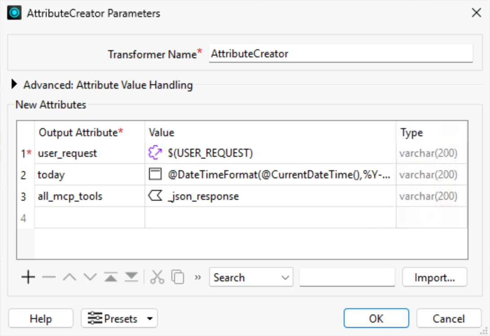
5) Run and Save
- Run the workspace to the AttributeCreator, including the List Tools MCPCaller.
- FME will prompt you for the input user request parameter. Leave it as the default. Click Run.
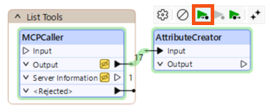
- Inspect the AttributeCreator output.
- FME populates the three attributes with their referenced values.
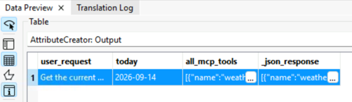
- Save your in-progress workspace.
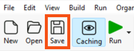
6) Add and Configure OpenAIConnector
The OpenAIConnector analyzes the available MCP tools and selects the best one for the user's request.
- Add an OpenAIConnector after the AttributeCreator. Open its parameters.
- For the account, select the Training OpenAI (safe.openai) web connection.
- Leave the Action set as Create Response.
- For the Model, leave it set to chat-latest.
- For User Prompt, open the Text Editor and enter the following prompt.
- It references the user_request, today, and all_mcp_tools attributes and instructs the model to analyze the user request and select the tool.
You are selecting a weather MCP tool based on a user request.
Available tools, including descriptions and input schemas:
@Value(all_mcp_tools)
User request:
@Value(user_request)
Your task:
Select the most appropriate weather tool and construct the tool_input that matches the selected tool's input schema exactly.
Rules:
- You MUST select tool_name exactly from the provided tool list.
- You MUST provide a tool_input that matches the input schema of the selected tool.
- Do not rename tools or invent new ones.
- Vancouver coordinates are latitude: 49.2827, longitude: -123.1207, timezone: "America/Vancouver".
- Use these coordinates for any location-based tool unless the user specifies a different location.
- If you do not know the geographic coordinates from the place name from the user request, estimate the coordinates from your knowledge to format the tool input.
- For weather_archive, today's date is @Value(today) — use a reasonable past date range.
- Do not use the geocoding tool.
Schema rules:
- tool_input must strictly follow the input schema of the selected tool.
- Preserve object structure and nesting exactly.
- Include all required fields.
- Do not add fields not defined in the schema.
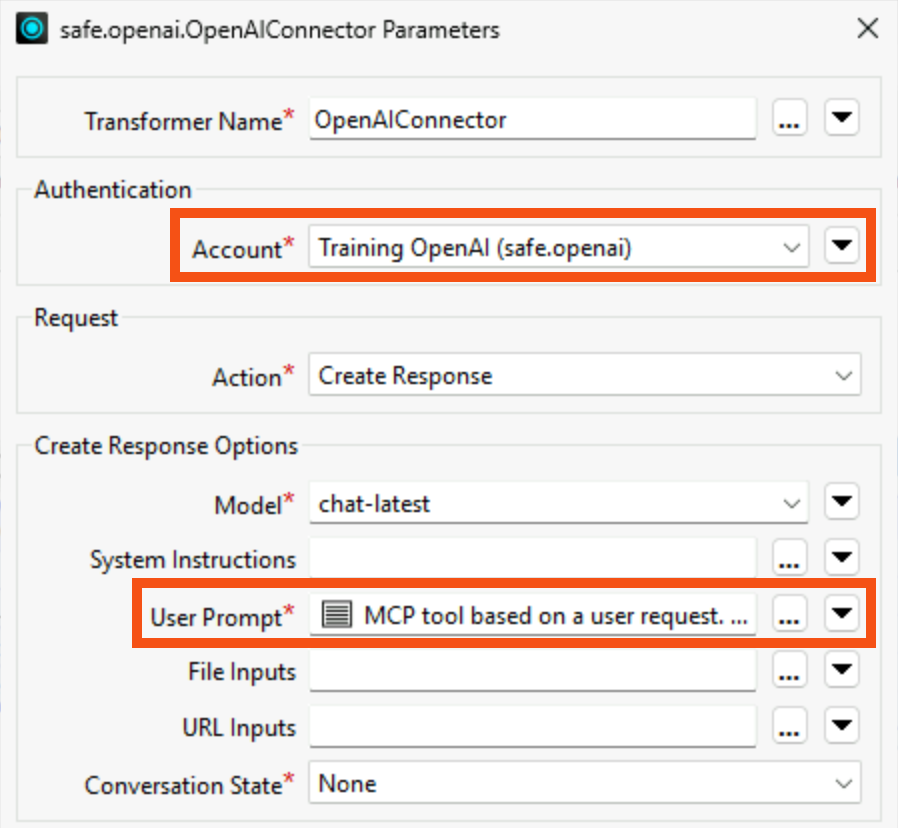
Copying and Pasting in Strigo Labs
This course requires a lot of copying and pasting to avoid typing out JSON and descriptions. To copy and paste content into your Strigo lab:
- Copy the content from the FME Academy.
- Paste the content into the Strigo lab's clipboard.
- In the lab's virtual machine, paste (Ctrl + V) the content in the desired location.
If you're having trouble pasting into the Strigo lab, log into the FME Academy in a browser in the lab and copy (Ctrl + C) and paste (Ctrl + V) directly within the lab.
- Enable the Structured Output option.
- Set the Schema Name to tool_selection.
- For JSON Schema, paste the following JSON into the editor.
{
"type": "object",
"properties": {
"tool_name": {
"type": "string"
},
"tool_input": {
"type": "object",
"additionalProperties": true
}
},
"required": ["tool_name", "tool_input"],
"additionalProperties": false
}
- Under Advanced, make sure Include Response JSON is set to Yes.
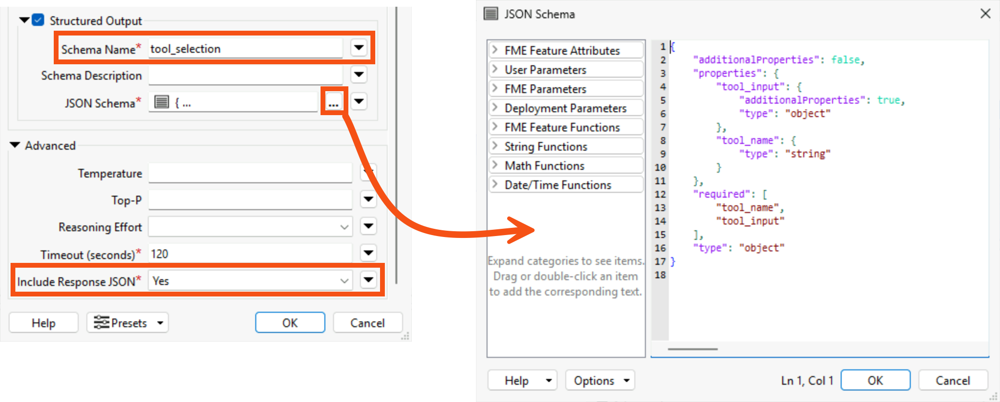
- Click OK.
- Run the OpenAIConnector and inspect the data cache in Data Preview.
- Save your workspace.
7) Add a JSONFlattener
To send output from the OpenAIConnector as attributes to the Call Tool MCPCaller, you need to parse the output JSON into attributes.
- Add a JSONFlattener and connect it to the OpenAIConnector Output port. Open its parameters.
- Leave the Input Source as JSON Document and set it to the _output_text attribute.
- Change Recursively Flatten Objects/Arrays to No.
- Click the ellipses for Attributes to Expose and add tool_name and tool_input as attributes.
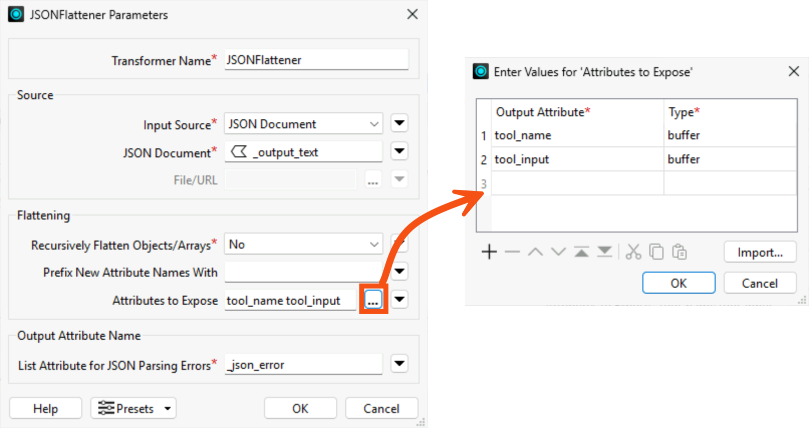
- Click OK to close the window.
8) Test the Tool Selection
The tool_name and tool_input attributes show which tool the AI selected and the input it formatted for that tool. In the next lesson, the Call Tool MCPCaller will take these exposed attributes as input.
- Run the workspace to the JSONFlattener. Leave the user request as the default.
- In Data Preview, inspect the tool_name attribute and the tool_input attribute.
- tool_name is the MCP tool the AI selected as most appropriate for your request, and tool_input follows the input JSON schema the tool requires.
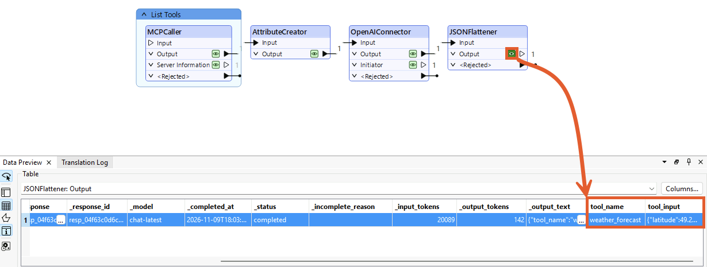
- Save your workspace.
- You will continue with it in the next exercise.
You have built an AI-driven tool selector that reads the weather MCP server's tool list and returns the tool and input that match a user's request.